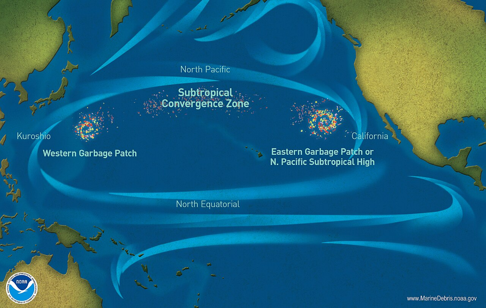

바다 한가운데의 쓰레기 섬
교과서 p. 58학습 목표
- 에크만 수송을 설명할 수 있다.
- 지형류의 발생 원리를 설명할 수 있다.

쓰레기들은 왜 하필 그곳에 모일까?
해양 쓰레기 지대의 위치를 표층 순환 지도의 환류 위치와 비교하게 합니다. 예시: 대양을 크게 도는 환류의 중심부는 흐름이 약하고 물이 정체되어, 떠다니던 쓰레기가 빠져나가지 못하고 모인다. 교과서 운영안은 3차시(에크만 수송·지형류 평형 / 해 보기 2차시)입니다.
2차시(100분) 수업 운영안
| 차시 | 단계 | 시간 | 활동 |
|---|---|---|---|
| 1차시 | 동기 유발 | 5분 | 난센의 프람호 이야기: "빙산은 왜 바람 방향으로 가지 않았을까?" |
| 복습 | 5분 | 수평 수압 경도력과 전향력 다시 보기 | |
| 핵심 개념 1 | 25분 | 에크만 나선·에크만층·마찰 저항 심도 → 에크만 수송(오른쪽 90°), 연안 용승·침강 | |
| 정리 | 15분 | O/X ①, 바람 방향에 따른 수송 방향 그리기 연습 | |
| 2차시 | 핵심 개념 2 | 20분 | 지형류 평형 3단계 → 유속 식과 계산 |
| 핵심 개념 3 | 20분 | 아열대 순환 형성, 서안 경계류·동안 경계류, 서안 강화 | |
| 탐구 활동 | 5분 | 위성 해수면 높이 자료로 지형류 방향과 빠르기 비교 | |
| 형성 평가 | 5분 | 문항 풀이, 스스로 확인하기 |
에크만 나선과 에크만 수송
교과서 p. 58 ~ 59바람이 불면 바닷물은 어디로 갈까?
- 대기와 해수의 상호작용으로 생긴 표층 해류는 거의 일정한 세기와 방향으로 흐르며 표층 순환을 이룬다.
- 표면 해수: 북반구에서 바람이 일정하게 계속 불면, 표면 해수는 전향력 때문에 풍향의 오른쪽 45°로 움직인다.
- 에크만 나선: 해수의 점성 때문에 표면의 움직임이 아래로 전달되는데, 깊어질수록 마찰로 유속이 줄고 전향력으로 방향이 점점 오른쪽으로 치우친다. 이를 수평면에 투영하면 나선 모양이 된다.
- 마찰저항심도: 해수의 이동 방향이 표면과 정반대가 되는 깊이 / 에크만층(마찰층): 표면~마찰저항심도
- 에크만 수송: 에크만층 해수의 평균 이동 방향. 북반구에서는 풍향의 오른쪽 90°, 남반구에서는 왼쪽 90°
- 에크만 수송은 해수의 수렴·발산과 그에 따른 용승·침강을 설명하는 데 중요하다.
자세히 알아보기 ① 에크만 나선과 에크만 수송 심화 정리
- 출발점: 바람이 해수면과 마찰하며 표면 해수를 끌고, 그 운동이 층과 층 사이의 마찰로 아래로 전달된다. 움직이기 시작한 해수에는 전향력이 작용한다.
- 에크만 나선(북반구)
- 표면 해수: 바람 방향의 오른쪽 약 45°로 흐른다.
- 깊어질수록: 흐름은 점점 더 오른쪽으로 휘고, 유속은 느려진다.
- 각 깊이의 흐름 화살표를 수평면에 겹쳐 그리면 나선 모양이 된다.
- 마찰 저항 심도: 흐름이 표면과 정반대(약 180°)가 되는 깊이. 보통 수심 100~200 m이며, 이곳 유속은 표면의 약 1/23로 매우 약하다.
- 에크만층(마찰층): 해수면부터 마찰 저항 심도까지의 층
- 에크만 수송: 에크만층 전체의 평균적인 해수 이동. 북반구에서는 바람 방향의 오른쪽 90°, 남반구에서는 왼쪽 90°이다.
• 북반구에서 해안선을 왼쪽에 두고 바람이 해안과 나란하게 불면, 에크만 수송은 먼 바다 쪽(오른쪽)으로 향한다 → 연안의 표층 해수가 빠져나가고 아래의 차가운 물이 올라온다(연안 용승).
• 반대로 해안선을 오른쪽에 두고 불면, 해수가 해안 쪽으로 쌓여 아래로 내려간다(연안 침강).
• 용승이 일어나면 영양염이 풍부한 찬물이 올라와 좋은 어장이 되고, 여름철 우리나라 동해안에 냉수대가 생기기도 한다.
개념 확인 ① O/X
지형류 평형
교과서 p. 59수압 경도력과 전향력이 평형을 이루면
- 지형류 평형: 수압 경도력과 전향력이 평형을 이룬 상태 / 지형류: 이때의 해수의 흐름
- 북반구에서 지형류는 수압 경도력의 오른쪽 직각 방향으로, 등수압선과 나란하게 흐른다.
- 유속은 위도가 낮을수록, 해수면 경사가 클수록 빠르다. 같은 위도에서는 해수면 경사가 유속을 결정한다.
자세히 알아보기 ② 지형류는 어떻게 만들어지고 얼마나 빠를까? 심화 정리
- 1단계 · 수압 경도력: 에크만 수송으로 해수가 한곳에 모이면 해수면이 기울고, 해수면이 높은 곳 → 낮은 곳으로 수압 경도력이 작용해 해수가 움직이기 시작한다.
- 2단계 · 전향력: 움직이는 해수에 전향력이 작용해 흐름이 오른쪽(북반구)으로 휜다. 유속이 빨라질수록 전향력도 커진다.
- 3단계 · 지형류 평형: 전향력이 수압 경도력과 크기가 같고 방향이 반대가 되면, 해수는 더 이상 가속되지 않고 등수압선과 나란하게 일정한 속력으로 흐른다 → 지형류
- 방향: 북반구에서는 수압 경도력의 오른쪽 90°, 남반구에서는 왼쪽 90°. 북반구에서 흐름을 등지고 서면 해수면이 높은 쪽이 오른쪽에 있다.
- 유속: g(ΔZ/ΔX) = 2vΩ sin φ 에서 v = g / (2Ω sin φ) × (ΔZ/ΔX)
- 위도가 같다면 해수면 경사가 클수록(등수압선 간격이 좁을수록) 빠르다.
- 경사가 같다면 위도가 낮을수록 빠르다.
위도 30°N, 100 km(10⁵ m)에 해수면 높이 차 1 m (경사 10⁻⁵)
v = 9.8 × 10⁻⁵ / (2 × 7.29 × 10⁻⁵ × 0.5) = 9.8 × 10⁻⁵ / 7.29 × 10⁻⁵ ≈ 1.3 m/s
• 쿠로시오 해류나 멕시코만류처럼 빠른 해류의 유속과 비슷하다.
• 같은 경사라도 위도 60°N이라면 sin 60° ≈ 0.87이므로 약 0.78 m/s로 느려진다.
개념 확인 ② O/X
실제 해양의 지형류: 아열대 순환
교과서 p. 60 ~ 61북태평양 아열대 해양의 지형류
- 북반구 아열대 해양에서 편서풍과 북동 무역풍이 불면 에크만 수송으로 위도 30°N 부근의 해수면이 높아진다.
- 그 결과 수압 경도력이 남쪽 또는 북쪽으로 작용해, 0°~30°N에서는 서쪽으로, 30°N~60°N에서는 동쪽으로 지형류가 흐른다.
- 동서로 흐르던 지형류는 육지에 부딪혀 남북으로 나뉘며 시계 방향의 큰 순환을 만든다. 이 순환을 이루는 해류는 모두 지형류이다.
- 해수면이 가장 높은 곳은 순환의 중심에서 서쪽으로 치우쳐 있다. 그래서 수압 경도력이 대양의 서쪽에서 더 크게 작용해 서쪽의 해류(쿠로시오 해류)가 더 강하게 흐른다.
- ① 바람
- ② 에크만 수송 → 해수면 상승
- ③ 지형류 (A~D 누르기)
- ④ 시계 방향 순환
자세히 알아보기 ③ 아열대 순환과 서안 강화 심화 정리
- 해수면이 볼록해지는 곳: 북반구 무역풍대(0°~30°N)에서는 에크만 수송이 북쪽으로, 편서풍대(30°N~60°N)에서는 남쪽으로 향한다 → 30°N 부근에 해수가 모여 해수면이 높아진다.
- 지형류의 방향: 높은 해수면(30°N)에서 바깥쪽으로 수압 경도력이 작용 → 그 오른쪽 90°로 지형류가 흐른다. 무역풍대에서는 서쪽, 편서풍대에서는 동쪽으로 흐른다.
- 대륙에 막히면: 서쪽으로 흐르던 해류는 대양 서쪽에서 북쪽으로, 동쪽으로 흐르던 해류는 대양 동쪽에서 남쪽으로 꺾인다 → 북반구에서 시계 방향, 남반구에서 시계 반대 방향의 아열대 순환
| 구분 | 서안 경계류 | 동안 경계류 |
|---|---|---|
| 흐름 | 대양 서쪽에서 고위도로 (난류) | 대양 동쪽에서 저위도로 (한류) |
| 폭과 깊이 | 좁고 깊다 | 넓고 얕다 |
| 유속과 수송량 | 빠르고 많다 (수십 cm/s 이상) | 느리고 적다 (수 cm/s) |
| 수온과 염분 | 높다 | 낮다 |
| 연안 용승 | 거의 없다 | 잘 나타난다 |
| 예 | 쿠로시오 해류, 멕시코만류, 동오스트레일리아 해류 | 캘리포니아 해류, 카나리아 해류, 페루 해류 |
• 저위도 무역풍대는 전향력이 작아 해류가 거의 휘지 않고 대양 서쪽 끝까지 간다.
• 고위도 편서풍대는 전향력이 커서 동쪽으로 가는 동안 점점 남쪽으로 휘어, 대양 동쪽 끝에 닿는 해수가 적다.
• 그 결과 순환의 중심(해수면이 가장 높은 곳)이 서쪽으로 치우치고, 서쪽 경계에서 해수면 경사가 급해져 빠르고 좁고 깊은 해류가 흐른다.
• 1948년 스토멜이 이를 계산으로 처음 설명하였다.
개념 확인 ③ O/X
전 세계 해양의 해수면 높이와 지형류 분석하기
교과서 p. 60해 보기 · 인공위성 해수면 높이 자료 분석
인공위성으로 관측한 평균 해수면 높이 분포에서, 북태평양의 A(쿠로시오 해류), B(북태평양 해류), C(캘리포니아 해류), D(북적도 해류)를 찾아 답해 보자.
1. A~D에서 수압 경도력, 전향력, 지형류의 방향을 각각 나타내 보자.
| 해류 | 수압 경도력 | 전향력 | 해류 방향 |
|---|---|---|---|
| A 쿠로시오 해류 | 서쪽 | 동쪽 | 북쪽 |
| B 북태평양 해류 | 북쪽 | 남쪽 | 동쪽 |
| C 캘리포니아 해류 | 동쪽 | 서쪽 | 남쪽 |
| D 북적도 해류 | 남쪽 | 북쪽 | 서쪽 |
2. A와 C에서 지형류의 세기를 비교하고 까닭을 설명해 보자.
스스로 확인하기
1. 우리나라 동해안에 남풍이 불 때 에크만 수송 방향은?
2. 지형류에 작용하는 두 가지 힘은?
3. 창의력 더하기 · 적도에서 지형류가 흐를 수 있을까?
더 알아보기 · 해수면 높이 지도 읽는 순서 탐구 확장
- ① 높낮이 찾기: 해수면이 가장 높은 곳(순환의 중심)을 찾는다. 북태평양·남태평양 모두 서쪽이 동쪽보다 높다.
- ② 수압 경도력 그리기: 높은 곳 → 낮은 곳으로, 등해수면선에 수직인 화살표를 그린다.
- ③ 지형류 방향 정하기: 북반구는 그 화살표의 오른쪽 90°, 남반구는 왼쪽 90°. 북반구에서는 높은 곳을 오른쪽에 두고 시계 방향으로 돈다.
- ④ 빠르기 비교: 위도가 같다면 등해수면선 간격이 좁은 곳(경사가 급한 곳)이 빠르다. 경사가 비슷하면 위도가 낮은 곳이 빠르다.
개념 확인 문제
그림 출처
지도는 NOAA의 퍼블릭 도메인 자료입니다. 모식도와 시뮬레이션은 직접 만들었습니다.